With the ReadySet EHS Manager Home Calendar, you can efficiently and quickly assess your clinic schedule the way you want. You can view your schedules across all calendars, or one calendar at a time. Each calendar is color-coded for easy viewing by day, week and month. Calendar views can be grouped together in a variety of configurations including an all calendar overlay, allowing you to configure the screen to meet your unique workflow. Other calendar features include rapid block time off, recurring blocked times, drag blocked time between calendars, and directly access the participant record from the calendar.
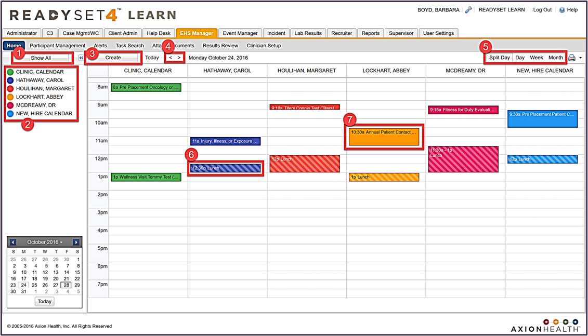
Show All button displays all clinic calendars in the main calendar screen.
Calendar Listdisplays a list of all clinic calendars.
Each clinic calendar has a defined color for appointments and blocked time.
Blocked Time will display with a cross hatch pattern.
Selecting the calendar name, turns the calendar on/off in the main calendar screen.
Create button - Opens an Add Event dialog box to create any type of Blocked time (e.g. lunch, hold time, meeting etc.)
Right/Left Pointers change the day.
Viewoptions:
Split Day– Displays selected calendars side by side.
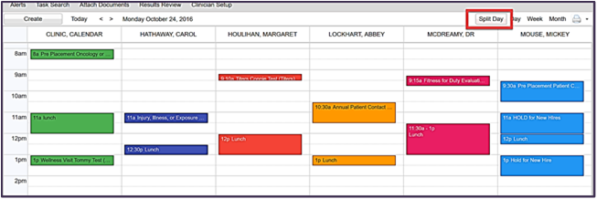
Day – Displays selected calendars in one large window in an “overlay” fashion.
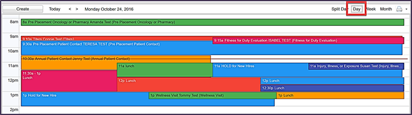
Week – Displays a full week with all appointments and blocked time for selected calendars.
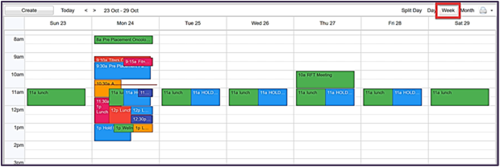
Month – Displays the month calendar with appointments and blocked time for selected calendars.
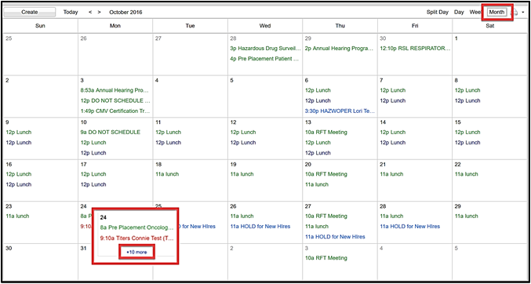
Create Blocked Timeby clicking directly on the desired time slot in a calendar (similar to Outlook). You can click and drag to select your time.
Appointment Features:
Hover over an appointment to display a brief description of the appointment.
Click on an appointment to display the Appointment Details dialog box where you can click Go to Chartto enter participant record.
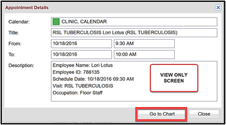
Changing Your Calendar Display
Click on a calendarto add or remove it from the main calendardisplay. For a single calendar view, hover over a calendar name and choose Show only this calendar from the drop-down arrow.
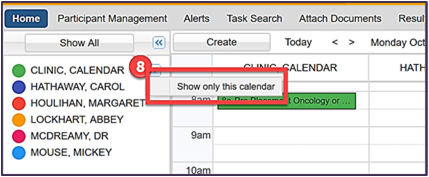
Use this calendar to change date by Day, Month or Year
Use the right/leftarrows to change month
Use the drop-down arrowbeside the year to change Year/Month
Click on any date to view that day.
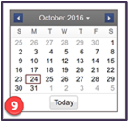
Creating Blocked Times and Recurring Events
ReadySet allows you to create any type of blocked time right from any calendar view. Blocked time can be a recurring meeting, lunch times or even a one-time “hold”. There are two ways to create blocked time in ReadySet: directly from the calendar in the same manner you would use Outlook, or using the Create button. Creating blocked time directly from the calendar will pre-populate most of the information for you.
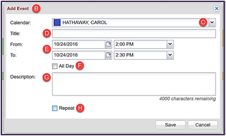
Click directly on the calendar time slot you wish to schedule (like Outlook) or click Create. In either case, the Add Eventdialog box will display.
Select the Calendar.
Enter a Title for your blocked time, such as "Hold Time for New Hire" or "Lunch".
Enter the starting and ending date. Either enter the starting and ending time or
Select the All Day checkbox.
Enter a Description(up to 4000 characters).
To create a recurring event, select the Repeatcheckbox and continue as described below.
Recurring Events
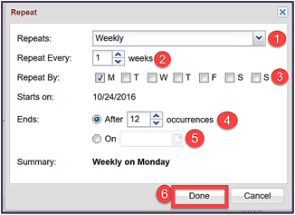
In the Repeats field, select the appropriate option:
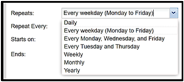
Indicate how often it should repeat - Repeat Every. This works in conjunction with the Repeats field, e.g. if you selected Weekly, you can indicate every 1 week, every 2 weeks, etc.
Select the day(s) of the week the appointment should occur.
In the Ends section, indicate if the recurrence should end After x occurrences,
If it should end on a particular date, enter a date.
Click Done when finished.
Deleting Blocked Time
Click on the event you wish to delete.
Click Delete. The Delete Recurring Event dialog box opens.
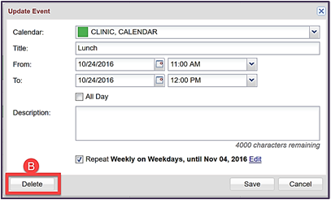
Select the appropriate option:
Only This Event – All other events in the series will remain
Following Events – This and all following events will be deleted
All Events – All events in the series will be deleted
Click Cancel this change if you do not want to delete the event.
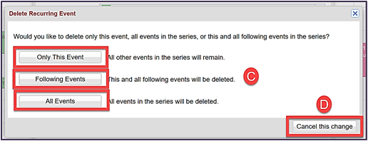
Printing Calendars
Printing is only available from the Split Day view for One or Multiple Calendars.
Click the Printer iconin the upper right corner of the Home view.
Select the calendars that you want to print.
Click Print.
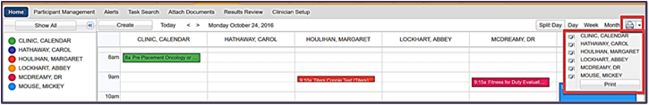
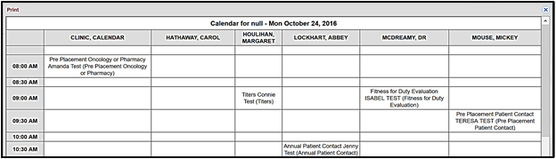
Calendar and Provider Details
TheProvider Contact Details and Color options.
The Provider Contact Details option allows you edit calendar information (start and end times, appointment durations etc.)
Hover over the calendar to edit, click the down arrow and select Provider Contact Details. Enter any changes and click Save.
Change your color displays for your calendar view. Select any color block or use the Custom option to define your color.
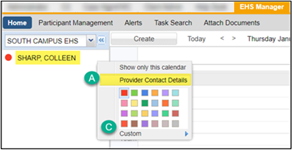
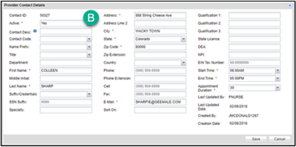
Edit Clinician Setup (Calendar View)
Click on the EHS Manager tab. This will take you to the Home screen.
Hover over the Calendar to edit and click the down arrow.
Click Provider Contact Details.
Edit the necessary fields.
Click Save.
Viewing Other Clinic Location Calendars
Click on the EHS Manager tab.
On the Home view, click the down arrow next to the clinic name, above the list of calendars.
Select the Clinic Location. Calendar(s) associated with that location will display.
Click Show All or click on the individual calendar(s).